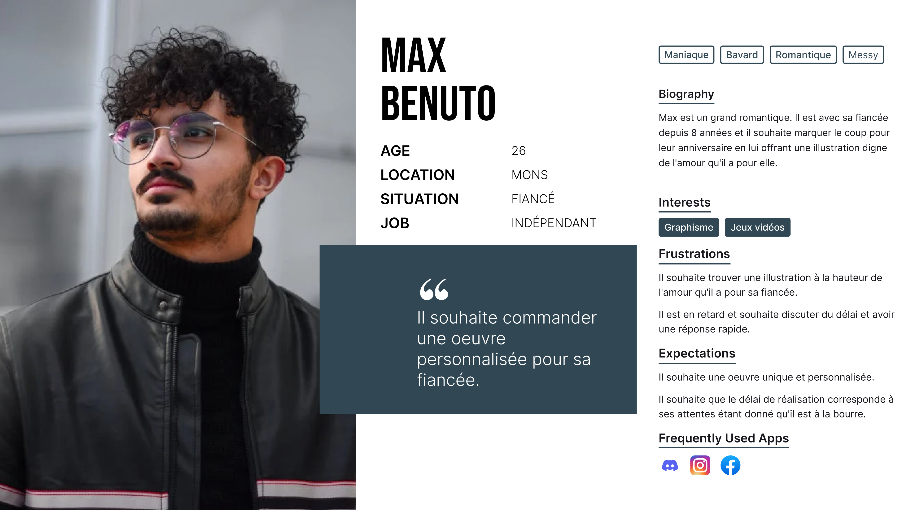
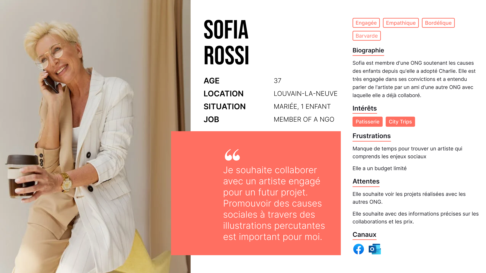
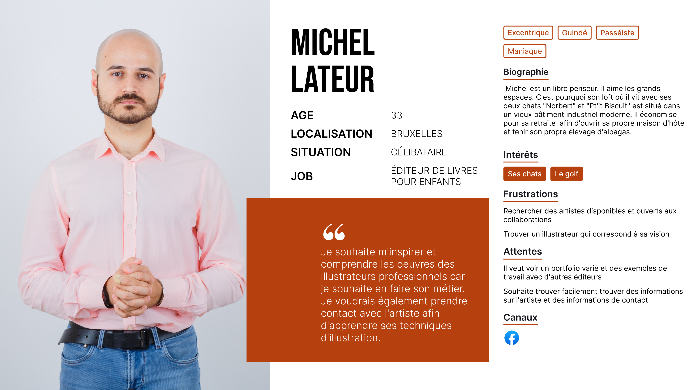

Yen's portfolio
Project Overview
As part of my training, I am currently participating in the creation of a portfolio for the artist and illustrator Yen Kohnert. This group project is a work in progress, being developed from start to finish and covering all stages of the process, from UX research to prototyping. Below, you will find the creation of personas, essential for defining user profiles and guiding the design.
We are carrying out this project as a team, following the Agile methodology, which allows us to strengthen our cohesion and build connections while collaborating effectively.
Image



